1）子供が安全かつ簡単に観察できる

オタマジャクシは、身近な田んぼや公園の水辺などで容易に観察でき、 毒や攻撃性がなく、子供でも安心して扱える生きものです。
▶ 安全性と手軽さが、自然観察の最初の一歩として適しています。
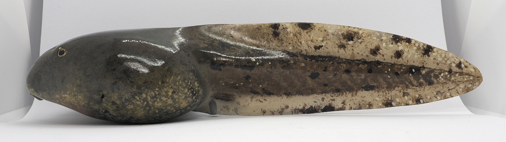
なぜフィギュアなのか？
おたまラボのフィギュアは、実際のオタマジャクシの観察と記録をもとに制作しています。 単なる装飾的な模型ではなく、成長段階や姿勢、やわらかさといった「生きている状態の印象」を伝えるための立体表現です。
私がオタマジャクシの立体模型を作り始めたきっかけは、 研究や観察のために何年もオタマジャクシを見てきたにもかかわらず、 あるときふと、 「自分は本当に一匹一匹をしっかり観察しているのだろうか」 と疑問に思ったことでした。
「目の前にはヤマアカガエルの Gonor's Stage34 のオタマジャクシがいる」 というように理解をしていても、 実際の個体を前にすると、 形や比率、微妙な違いを どこまで意識できているのか。 振り返ってみると、 漠然と「分かっている気」になっている部分が 少なからずあることに気づきました。
そこで、 「本当に見るためには、どうすればいいのか」 を考えた結果、 実際のオタマジャクシをもとに、 自分の手で立体模型を作ってみることにしました。
粘土をこね、 形を整え、 実際のオタマジャクシを見ながら、比率や凹凸を何度も確認する作業を通して、 それまで見落としていた体の厚みや、 総排泄孔の形、 目や口の位置関係などが、 はじめて具体的な「形」として理解できるようになったのです。
この経験を通して、 立体模型は単なる完成品ではなく、 観察そのものを深めるための 思考の道具になり得るのだと実感しました。


オタマジャクシは、 カエルの成長過程の一段階として 図鑑や教科書に頻繁に登場する、 非常に身近な生物です。 一方で、 その姿が「成体になるまでの途中段階」として 簡略化されて扱われることも少なくありません。
しかし実際には、 オタマジャクシの体には、 種ごとの特徴や、 発生段階に応じた形態変化が 明確に現れます。 体の厚みや比率、 尾の形状、 口器の構造、 目や鰓の位置関係などは、 観察の仕方次第で 多くの情報を与えてくれます。
その一方で、 オタマジャクシは小さく、 水中を素早く泳ぎ回り、 体色も暗色系であることが多いため、 野外や水槽内で 細部まで観察することは 決して容易ではありません。
また、 図鑑や資料写真に掲載されている個体が、 必ずしもその種や発生段階を 代表しているとは限らない場合もあります。 観察や記録においては、 「どの個体を、どの視点で見るか」 という点そのものが、 重要な意味を持ちます。
下記の3つの写真は、同じ場所、同じ時期に観察した、同一発生段階のカジカガエルのオタマジャクシです。 図鑑的には「同じステージ」として一括りにされがちですが、 よく見ると体の厚みや模様、腹部の形状などには個体ごとの違いが現れています。


オタマジャクシを丁寧に観察することは、 単に成長の過程を追うだけでなく、 形態の多様性や、 発生という現象そのものを 立体的に理解することにつながります。
教育の場においても、 オタマジャクシの観察は 特に大きな意味を持ちます。 身近な水辺で見られる生きものでありながら、 日ごとに姿を変え、 じっと見なければ違いに気づけない存在であるため、 子どもたちにとって 「よく見る」「比べる」「考える」 という観察の基本姿勢を 自然に身につける題材となります。
何が変わったのか、 どこが昨日と違うのか、 その変化を言葉にしようとする過程そのものが、 科学的なものの見方の入り口になります。 オタマジャクシは、 知識を教えるための教材である以前に、 観察する力を育てる存在だと感じています。
オタマジャクシは、身近な田んぼや公園の水辺などで容易に観察でき、 毒や攻撃性がなく、子供でも安心して扱える生きものです。
▶ 安全性と手軽さが、自然観察の最初の一歩として適しています。

多くのオタマジャクシは、特別な設備を必要とせず、 水槽や簡単な飼育容器で飼育することができます。 餌や水質管理も比較的容易で、 初めて生きものを飼育する場合でも取り組みやすい点が特徴です。
そして最大の特徴は、 数週間から数か月という短い期間の中で、 後肢の形成、前肢の出現、尾の吸収といった 劇的な変態の過程を連続して観察できることです。
日ごとに体の形が変化していく様子を追うことで、 成長が「一瞬の出来事」ではなく、 多くの段階を経て進行する現象であることを、 実感を伴って理解することができます。
教科書や図鑑では一枚の図で示されがちな変態も、 実際の飼育観察では、 その途中段階の重要性や個体差に気づくきっかけになります。 この「変化を追い続ける体験」こそが、 生物の成長を深く理解するための土台になります。
▶ 成長と変態を時間の流れとして体験できることは、 生きものを静止した存在ではなく、 変化し続ける存在として捉える視点を育てます。

オタマジャクシを単に「カエルになる前の姿」としてではなく、 形態や発生段階に注目して観察することで、 その個体がどの種に属するのかを判断できる場合があります。
体の比率や尾の形、口器の構造、体色や斑紋、 さらには発生段階（ステージ）を組み合わせて読み取ることで、 成体を見なくても、 その場所にどのようなカエルが生息しているのかを推測することが可能になります。
さらに、発生段階が分かれば、 そのオタマジャクシがいつ頃産卵されたのか、 その水辺がどの季節に繁殖場所として利用されているのかといった、 時間的・環境的な情報も見えてきます。
これは単なる生きもの観察にとどまらず、 その場所の生態系や環境の状態を理解するための手がかりになります。 小さなオタマジャクシ一匹から、 周囲の自然環境全体へと視点が広がっていくのです。
▶ オタマジャクシの観察は、 生きものと環境を結びつけて理解するための、 重要な入り口になります。

生物学における古典的な観察・記録手法として、点描（スケッチ）が用いられてきました。 しかし、オタマジャクシは小さく、黒っぽく、よく動くため、 特に子供や初学者にとって、点描は難易度の高い作業です。
本プロジェクトでは、こうした課題を補う手段として、 実物の特徴を拡大・強調した立体模型（フィギュア）を制作しています。 フィギュアの色塗りは点描に比べて取り組みやすく、 形態の違いや特徴に自然と目を向けさせる効果があります。
立体模型は、実物観察を置き換えるものではなく、 観察を深め、理解を補助するための道具です。 見て、比べて、表現するという過程を通して、 オタマジャクシの構造や多様性をより立体的に捉えることが可能になります。
※ 教育現場での具体的な活用例や、子供たちの反応については Educationページで紹介しています。

学会や展示の場で、 「3Dスキャンを使って制作しているのですか？」 と質問を受けることがよくあります。 しかし、私のオタマジャクシ模型は、 すべて実物個体の観察をもとに、 手作業で制作しています。
オタマジャクシは水中で生活する生きものであり、 地上に取り出した時点で、 本来の姿勢や体の張り、 皮膚の質感は大きく変化してしまいます。 特に、生きて泳いでいるときの わずかな湾曲や柔らかさは、 静止した状態の3Dスキャンでは 捉えきれません。 私にとって重要なのは、 「形を写し取ること」ではなく、 「生きているときに見える形を理解すること」です。
また、図鑑や資料に掲載されている オタマジャクシの写真は、 必ずしもその種を代表する 典型的な個体とは限りません。 体格や発生段階、栄養状態には 大きな個体差があり、 どの個体をモデルとするかによって、 受け取られる印象は大きく変わります。 私は、複数個体を比較しながら、 その種の特徴が最もよく表れる個体を選び、 立体模型のモデルとしています。
制作では、粘土をこねながら 何度も観察記録を見返し、 「このふくらみは何によるものか」 「この影は皮膚の厚みか、筋肉か」 と考え続けます。 この過程そのものが、 観察を深める行為であり、 手を動かすことでしか気づけない 形の意味があります。
完成した模型は、 実物の約5倍スケールで制作しています。 オタマジャクシは身近な存在である一方、 小さく、よく動き、 体色も暗いものが多いため、 細部まで観察することは容易ではありません。 拡大された立体模型は、 実物では見逃しがちな特徴を 立体的に理解するための 補助的な観察ツールとして機能します。
私にとって立体模型は、 実物の代わりとなるものではなく、 実物をより深く見るための 「観察の延長線上にある道具」です。
立体模型は、完成品そのものが目的なのではなく、 生きものをより深く理解するための「観察のプロセス」を かたちにしたものだと考えています。
本プロジェクトで制作しているオタマジャクシのフィギュアは、 見た目の印象だけで作られたものではありません。 フィールドでの採集、飼育下での観察、個体差の比較を経て、 「その種を最もよく表す1匹」を慎重に選定しています。
オタマジャクシの形態は、種だけでなく、生息環境や成長段階、 個体差によって大きく変化します。 そのため、いきなりフィードに行ってオタマジャクシ（あるいは卵）を捕まえても、実は目的とは違う種類のオタマジャクシであることもあります。 本プロジェクトでは、こうした誤同定を防ぐことを最優先に、カエルの産卵現場に立ち会って、卵の段階からサンプリングを行っています。
採取の際には、産卵中の成体（ペア）を直接観察し、 その場で産み付けられた卵を採取しています。 成体を確認したうえで卵を採取することで、 「どの種のオタマジャクシであるか」が不明確になることはありません。
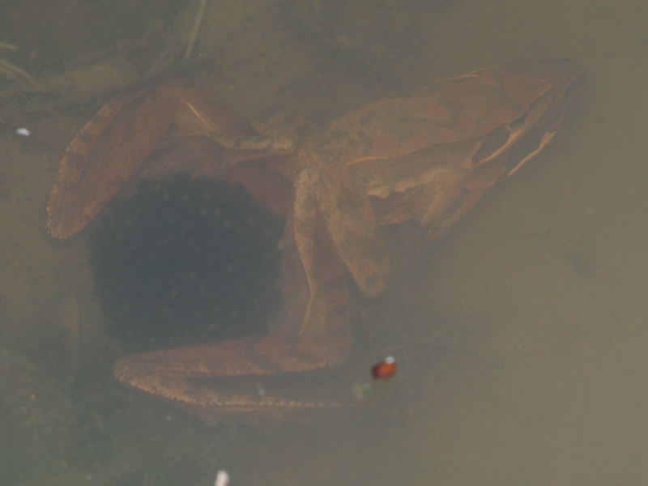
オタマジャクシは場所によって形や模様、色などが変わることがあります。特定の環境条件に偏らない母集団を形成するため、 1か所の産卵場所に依存せず、可能な限り複数地点から卵を採取しました。
採取は必要最小限にとどめ、 変態後の個体は元の生息地へ戻すなど、 野外個体群への影響が最小限になるよう配慮しています。
また、採取した卵はオタマジャクシまで飼育して、 成長過程を追跡することで、 野外観察だけでは判断が難しいケースにおいても 誤同定の可能性をさらに低くしています。
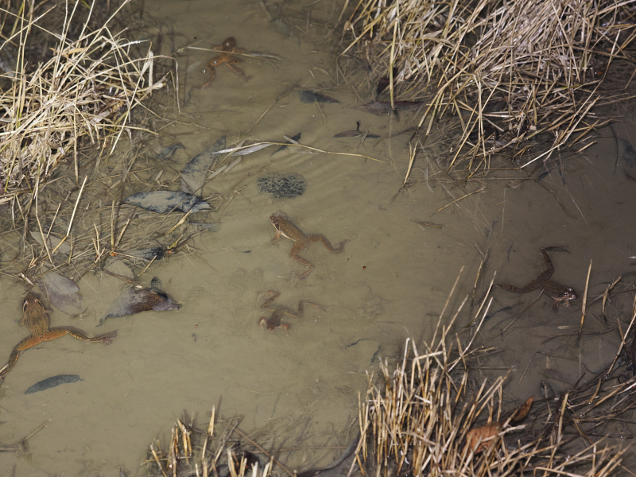
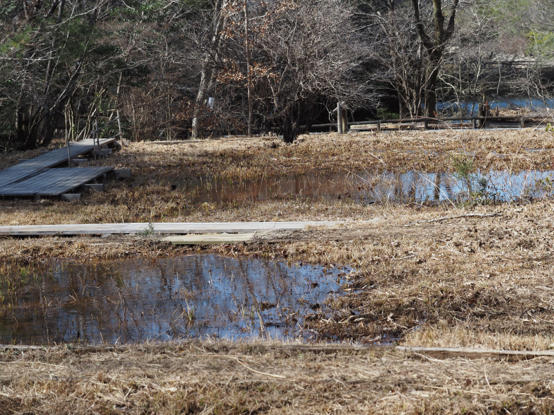
フィギュア制作のモデルとなる個体は、 基本的に飼育下で育成した個体の中から選定しています。 あわせて野生個体との比較観察を行い、 飼育による形態バイアスが生じていないことを確認しています。
現在のモデルは、Gonerステージ35前後（後肢が発達する前）の オタマジャクシに限定しています。 この段階は、種ごとの体型差や尾部形状が 最も安定して観察できる時期です。なお将来的には別ステージの立体模型も作成する予定です。
多数の個体を比較したうえで、 その個体群の中で最も平均的な形態を示す個体を 最終的なモデルとして選定しています。
なお、現時点では選定は客観的な方法ではなく、主観的な方法を採用しています。 この選定を、誰が選んでも同じ個体になるように客観的方法にすること、また個体群の形態の違いを数値化することが、今後の課題と考えています。
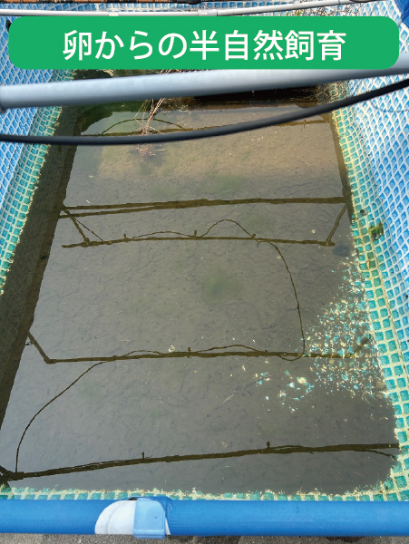
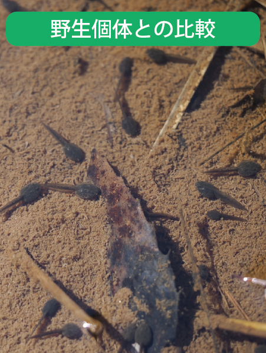
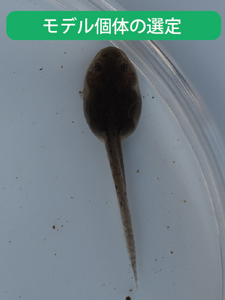
選定したモデル個体については、 一般的なミラーレス一眼カメラ（マクロ撮影）に加え、 デジタル顕微鏡を併用し、 肉眼では捉えにくい細部構造まで写真として記録しています。
撮影は目的に応じて環境やセッティングを変え、 「形を正確にとらえる記録」と 「色や模様を正確にとらえる記録」を 意識的に分けて行っています。
以下の写真はニホンアカガエルのオタマジャクシのモデル個体の代表的な記録写真です。 実際には、各種類のモデル個体について、全身および各部位を含む300〜500枚程度の写真記録を行っています。
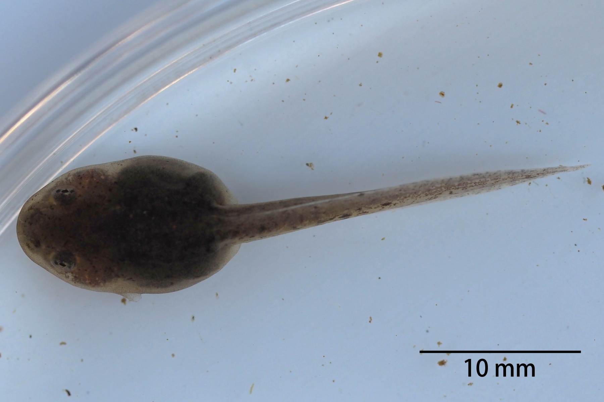
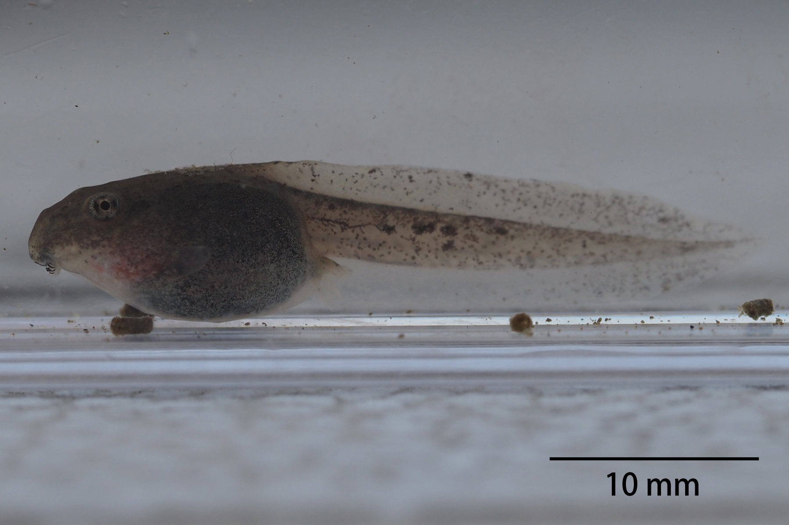
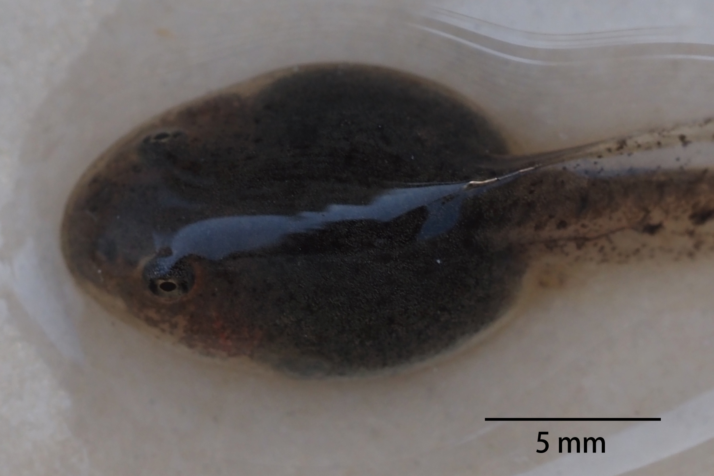
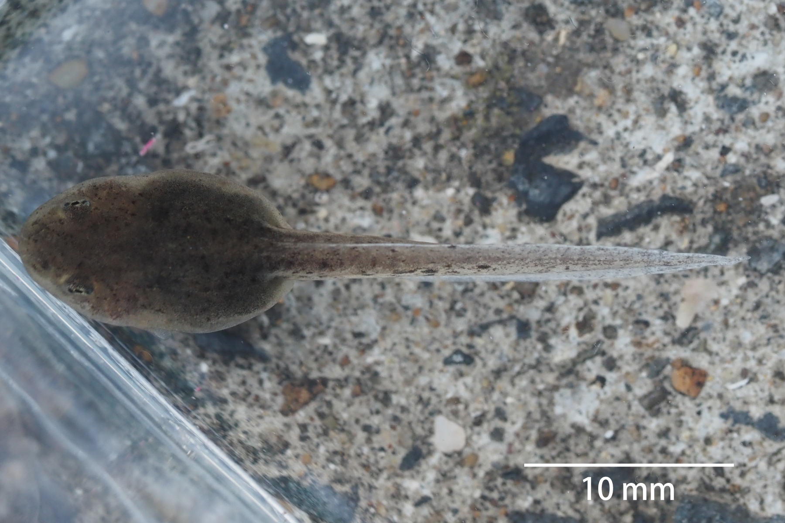
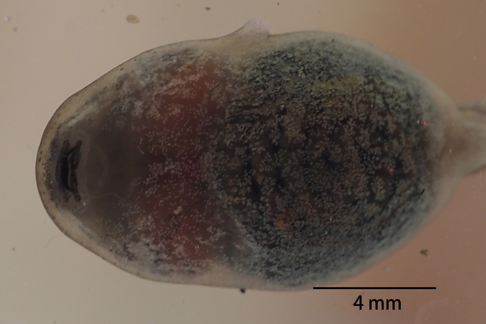
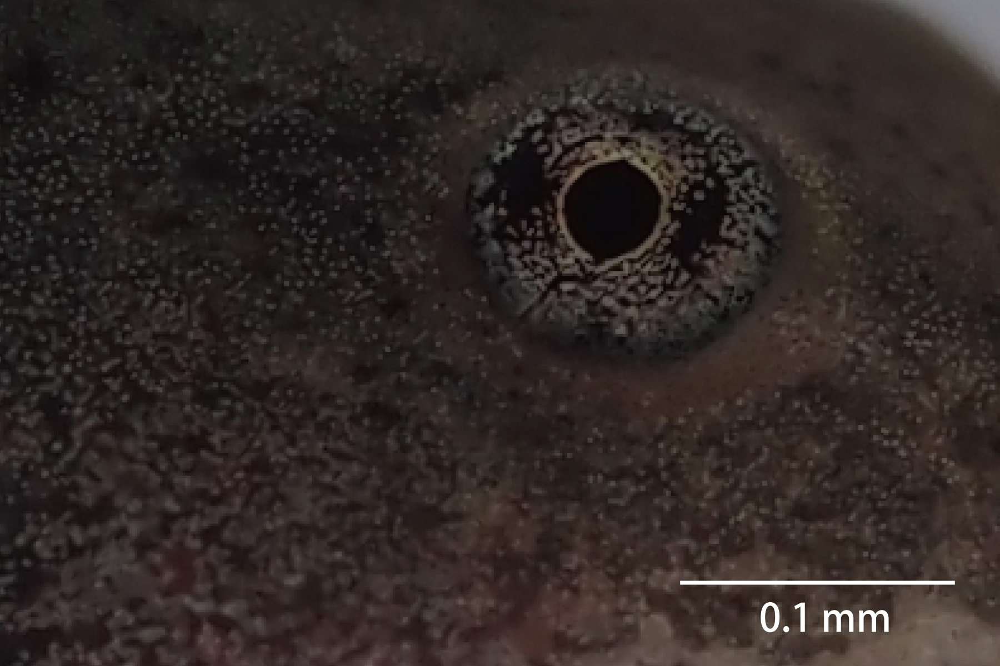
前述のモデル個体の観察記録をベースとして、フィギュア作成を行っています。ここではその工程を紹介します。
なお、本フィギュアは、オタマジャクシの形態的特徴が最もよく現れる発生段階（Gosnerステージ35前後）の個体をモデルとしています。 また、この段階の特徴は前後の発生段階でも維持されることが多いため、本ステージの形態を理解することで、フィールドでのオタマジャクシの種類が判別できるきっかけになります。
また、実際のオタマジャクシの5倍の大きさでフィギュアを作成しています。 これは微細な形態（眼、口、体表、尾部の厚み）を正確に造形するため、それに色素など細かい模様や色を再現するためです。 さらに、子供が未塗装のフィギュアを自分で塗りやすいサイズにするためです。
なお以下の写真は、作業工程をわかりやすく紹介するためものであり、同一種のフィギュア作成を示すものでないことにご留意ください。
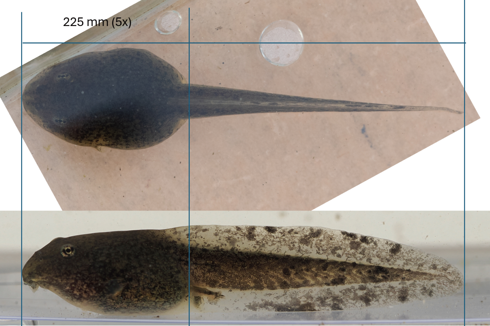
観察・記録した写真をもとに、実物の約5倍スケールに拡大した写真を作成し、 造形の基準として使用します。

石粉粘土を用いて原型を制作します。総排泄孔や鰓孔もチューブで再現します。

やすり、サーフェイサー、パテなどを使い、輪郭や表面形状など、詳細を整えて原型を完成させます。

完成した原型から、複製用のシリコンモールドを作成します。

モールドにレジン（樹脂）を流し込み、複数のフィギュアを複製します。
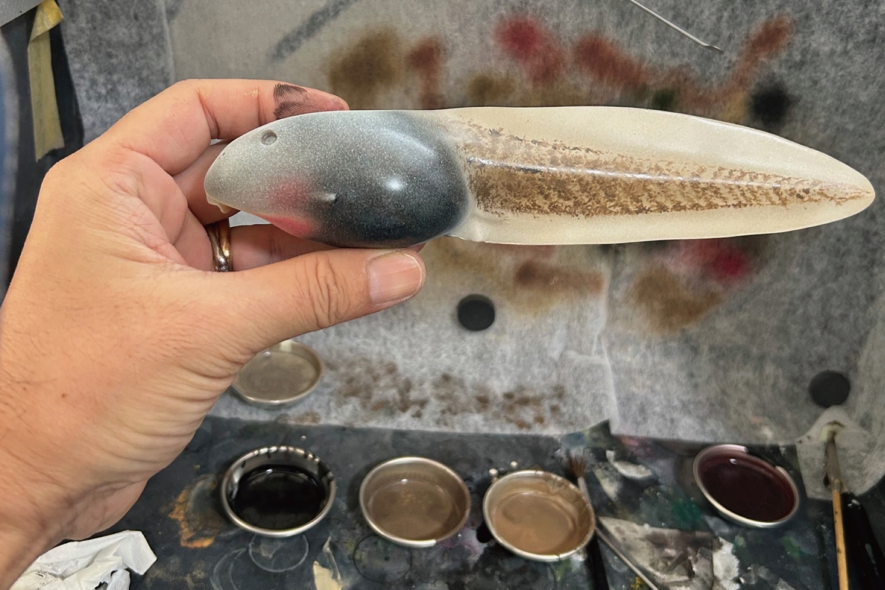
ラッカー・アクリル・エナメル塗料などを使って、何回にも分けて塗装します。
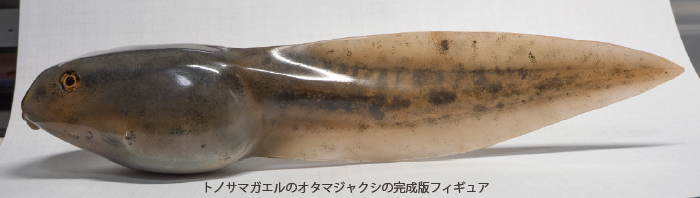
本フィギュアは、フィールドでの個体観察、卵からの飼育、 成長過程の記録を通じて得られた実物データをもとに造形しています。 数百匹規模の個体差を比較し、「その種らしさ」を最もよく表す形態を立体として再構成しています。


本フィギュアでは、オタマジャクシの形態的特徴が最も安定して現れる Gosnerステージ35前後（後肢が明瞭に現れる直前）の個体をモデルとしています。 この段階は、種ごとの体型差を理解するうえで重要な時期です。


フィギュアは実際のオタマジャクシの約5倍の大きさで制作しています。 これは微細な形態や色素分布を正確に再現するためであり、 併せて観察や着彩体験を行いやすくするためのスケール設定です。


完成品としての展示だけでなく、未塗装フィギュアを用いた観察教材や 着彩体験での使用も想定して設計しています。 観察と表現を通じて、生きものへの理解を深めることを目的としています。


本フィギュアは、制作者個人の観察や判断だけに基づいて制作されたものではありません。 制作途中の段階から、様々な両生類研究者に実物を確認してもらい、助言を受けながら改良を重ねています。
例えば、総排泄孔の位置や形状、体表構造の表現などについて具体的な指摘を受け、 それらを造形に反映させてきました。 その結果、研究者からは 「形態学的・生態学的・生理学的観点から極めて完成度が高い」 という評価をいただいています。
また、2025年の日本爬虫両生類学会において発表および展示を行い、 国内外の研究者や、水族館・博物館の学芸員からも高い評価と助言を得ました。 こうした客観的なフィードバックを制作に反映することで、 学術資料・教育教材としても信頼できる立体表現を目指しています。
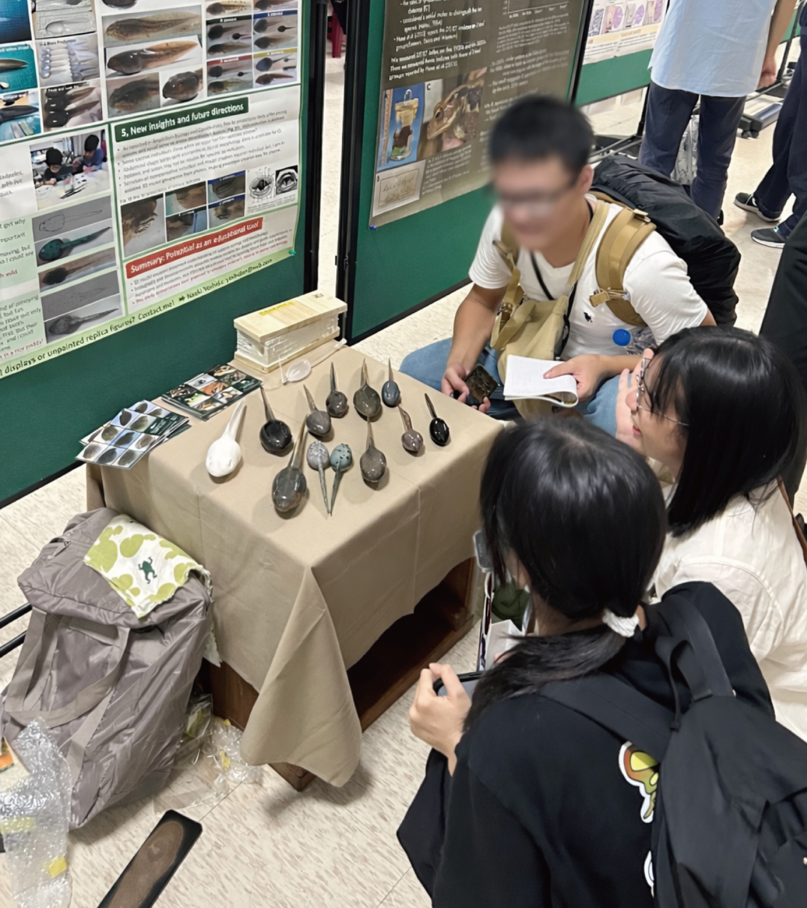
各種カエルのオタマジャクシの形態観察に基づいて制作したフィギュアの一覧と詳細については、以下よりご覧ください。
おたまフィギュア一覧これらのフィギュアは、研究発表や教育現場での活用も視野に入れて制作しています。 実物観察が難しい場面でも、成長段階や形態の違いを直感的に伝えることができます。
学会発表や教育実践については「作者について」ページもあわせてご覧ください。
作者についてフィギュアの制作に関するお問い合わせは、以下よりお気軽にご連絡ください。また購入や展示、ワークショップ、研究など、オタマジャクシに関することであればどのようなことでもお気軽にお尋ねください。
教育関係者・地域活動をされている方からの ご相談やご意見も歓迎しています。
お問い合わせ